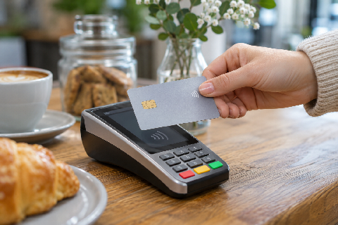

フィンテック / 解説
Monzo、タッチ決済の累計200ポンド初期上限を段階的に撤廃
1回100ポンドの上限は維持。全員一斉ではなく、リスク判定による確認へ順次移行します。

数回タッチした後の突然のPIN要求はカード停止に見えることがあります。Monzoは11月12日、累計200ポンドで一律にPINを求める初期上限を段階的に撤廃し、リスク判定に切り替えると発表しました。
1回の支払いが無制限になるわけではなく、100ポンド上限は維持されます。利用者が設定した累計上限も変わりません。アプリで上限設定や非接触決済停止ができます。
背景は強い不正対策を条件に柔軟な運用を認めたFCAの2026年3月規則変更です。新方式は通常と異なる取引を見てPINを求めます。
2か月の自社試験でPIN要求は54%減、申告された不正額は比較方式より30%低く、成功決済は4%増。若年口座では要求が96%減りました。Monzoの試験値であり他行に一般化できません。
初期累計上限なしでも不審な取引にはPINが必要です。未移行顧客には200ポンドが残る場合があり、段階配信です。
Apple PayとGoogle Payは別扱いで、オフライン決済も設定どおりにならない場合があります。自分のLimits画面を確認し、必要なら独自上限を設定してください。